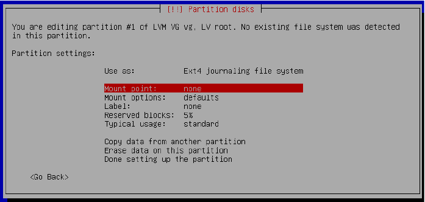
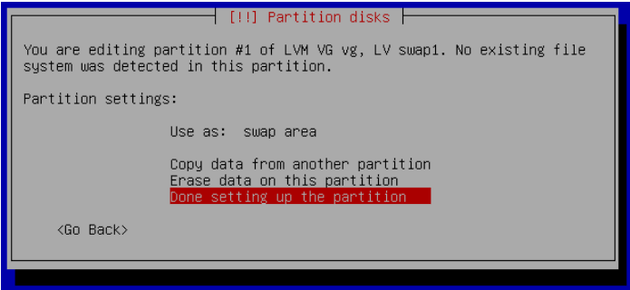
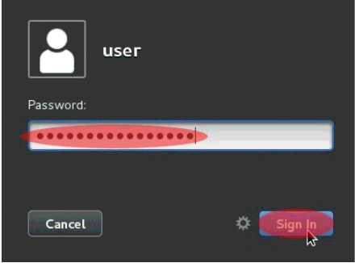
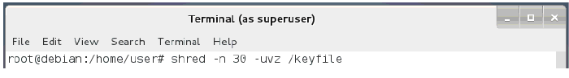

نصب سیستم عامل بر روی پارتیشن هارد درایو رمزنگاری شده همراه بافلش درایو نگه دارنده کلید بوت
همچنان که قبلن هم گفته شد اگر هر گونه اطلاعات مهمی دارید باید نگران پاک شدنشان باشید. لطفن اگر هنوز از سیستمتان بک آپ نگرفته اید این کار را انجام دهید. برای جلوگیری از اینکه هرگونه اتفاق بدی بیفتد چون شما باید هاردتان را پارتیشن بندی کنید امکان از دست رفتن اطلاعات وجود دارد. از این بحث میگذریم بیایید شروع کنیم.
۱. زمانی که از شما خواسته شد partitioning method را انتخاب کنید Manual را انتخاب کرده و Enter کنید.
۲. در ابتدا باید فلش درایوتان را آماده کنید تا از آن به عنوان درایو کلید بوت استفاده کنید سپس نام درایو را یادداشت کنید.در مثال زیر فلش درایوی که به عنوان دیسک کلید بوت استفاده شده با نام (SCSI5 (0,0,0) (sdc نمایش داده شده و هارد درایو داخلی جایی که root دبیان بر روی آن نصب میشود (SCSI1 (0,0,0) (sda است. اهمیت اختصاصی با دستگاه فلش درایوتان که میخواهید کلید بوت را بر روی آن نصب کنید است. که در مثال پایین sdc می باشد. هرچند که این نام ممکن است بر روی کامپیوتر شم متفاوت باشد.به درایو ها نگاه کنید و درایوی که سایزش با سایز فلش درایوتان یکی است را انتخاب کنید. از نام فلش درایوتان یاد داشتی بردارید و آن را برای استفاده آینده در جایی نگه دارید. حالا فلش درایوی را که می خواهید برای کلید بوت سیستم مورد استفاده قرار دهید را انتخاب کرده وenter کنید.
نکته: اگر در حال نصب دبیان از روی فلش درایو قابل بوت هستید حواستان باشد که باید فلش درایوی را که متفاوت با این فلش درایو است را انتخاب کنبد. در غیر این صورت اگر دبیان را بر روی درایو حامل نصاب دبیان نصب کنبد در نهایت نصب ناموفق خواهد بود.(یعنی حواستون باشه اینجا باید دو تا فلش استفاده کنید یکی که توش فایل نصاب یکی دیگه هم که خالیه و باید روش کلید و بریزید)
۳. در صفحه بعد که بنمایش در میآید Yes را انتخاب کرده و Enter کنید.
۴. در صفحه بعد در بین گزینه ها گزینه ای با برچسب FREE SPACE را میبینید آن را انتخاب کرده و Enter کنید.
۵.در صفحه بعد Create a new partition را انتخاب کرده و Enter کنید.
۶. در صفحه بعد از شما خواسته میشود که یک سایز برای پارتیشنتان انتخاب کنید. شما میتوانید براحتی مقداری که سیستم به صورت پیشفرض انتخاب کرده را به همان حالت رها کرده و Enter کنید.
۷. در صفحه بعد از شما Type for the new partition خواسته میشود. Primary را انتخاب کرده و Enter کنید.
۸. در صفحه بعد باید تنظیمات پارتیشنتان را انتخاب کنید. در اینجا گزینه های زیادی وجود دارد. اگرچه در این گام شما فقط باید نگران یک گزینه باشید. باید Mount point را به boot/ تغییر دهید پس Mount point را انتخاب کرده و Enter کنید.
۹. در صفحه بعد boot – static files of the boot loader/ را انتخاب کرده و Enter ککنید
۱۰. در صفحه بعد گزینه Done setting up the partition را انتخاب کرده و Enter کنید.

۱۱. در صفحه بعد شما پروسه تغییر سایز پارتیشن را بر روی هارد داخلیتان آغاز میکنید تا بتوانید یک پارتیشن رمزنگاری شده برای سیستم عامل دبیان بسازید. در این آموزش هارد درایو داخلی sda است . در کامپیوتر شما نام هارد درایوتان ممکن است متفاوت باشد.همچنین ممکن است تعدادی پارتیشن داشته باشید که در نامشان sda وجود دارد. بزرگترین آن را انتخاب کرده و آن را به مقدار سایزی که می خواهید به دبیانتان اختصاص بدهبد کوچک کنید. اگرچه قبل از انجام اینکار اطمینان حاصل کنید که به اندازه کافی فضا در درایو وجود دارد تا اجازه کوچک کردن را به شما بدهد. درایوی را که میخواهید کوچک کنید را انتخاب و Enter کنید.
۱۲. در صفحه بعد Resize the partition را انتخاب کرده و Enter کنید.
۱۳. در صفحه بعد Yes را انتخاب کرده و Enter کنید.
۱۴. در صفحه بعد از شما خواسته میشود که یک سایز پارتیشن جدید وارد کنید. ۶۴ گیگ باید برای هدفتان کافی باشد در کمترین حالت ۳۲ گیگ فضا را وارد کنید. اگرچه اگر میخواهید بیشتر از ۶۴ گیگابایت اختصاص دهید و فضای کافی برای انجام این کار دارید آزادید که انجامش دهید. در مثال زیر ۶۴ گیگابایت برای چیزی که قرار است سیستم عامل رمزشده مان باشد انتخاب شده است. از آنجایی که حداکثر فضای دیسگ در این مثال ۵۳۲.۹ گیگ است با کسر ۶۴ گیگابایت ۴۶۸.۹ گیگابایت باقی می ماند. از همین شیوه استفاده کنید تا تعیین کنید که باید چه مقداری در فیلد برای برای سایز پارتیشن جدید وارد کنید و سپس Enter کنید. پروسه ممکن است کمی طول بکشد.
۱۵. در صفحه بعد شما برچسبی با نام FREE SPACE در زیر sda همراه با سایزی که برای رمزنگاری دیسک تان انتخاب کردید مشاهده میکنید آن را انتخاب کرده و Enter کنید.
۱۶. در صفحه بعد Create a new partition را انتخاب کرده و Enter کنید.
۱۷. در صفحه بعد نیز حداکثر سایز دیسک به صورت پیشفرض انتخاب شده است. Enter کرده و ادامه دهید.
۱۸. در صفحه بعد Logical را انتخاب کرده و Enterکنید.
۱۹. در صفحه بعد باید این پارتیشن را را بعنوان پارتیشن رمزنگاری شده تنظیم کنیم. Use as: Ext4 journaling file system را انتخاب و Enter کنید.
۲۰. در صفحه بعد گزینه physical volume for encryption را انتخاب کرده و Enter کنید.
۲۱. این گام انتخابی است (یعنی میتونید انجامش ندید). در صفحه بعد گزینه ای با عنوان Erase data وجود دارد که به صورت پیشفرض بر روی Yes تنظیم شده است. اگر انتخاب کنید که اطلاعات پاک شود نصاب تمام پارتیشن را با دادههای شبه رندوم رو نویسی میکند. اگر میخواهید تا امنیتتان را سفت تر بگیرید این کار توصیه میشود چرا که در صورتی که شخصی بخواهد هاردتان را جرم شناسی کند کار او بیشتر سخت می شود. هر چند این مرحله میتواند زمان بسیار زیادی ببرد. در صورتی که میخواهید این بخش را رد کنید گزینه Erase data را انتخاب کرده و Enter کنید. تنظیم گزینه به حالت No در خواهد آمد.در صورتی که میخواهید دیتا را پاک کنید این مرحله را نادیده گرفته و به گام ۲۲ بروید.
۲۲. در این گام Done setting up the partition را انتخاب و Enter کنید.
۲۳. در صفحه بعد Configure encrypted volumes را انتخاب کرده و Enter کنید.
۲۴. در صفحه بعد Yes را انتخاب کرده و Enter کنید
۲۵. در صفحه بعد Finish را انتخاب کرده و Enter کنید.
۲۶. اگر در گام ۲۱ Erase data را انتخاب کردید. از شما دوباره پرسیده میشود که آیا میخواهید دادهها پاک شوند. اگر همچنان تصمیم به این کار دارید Yes را انتخاب کرده و Enter کنید. این پروسه ممکن است ساعتها زمان ببرد. اگر انتخاب کرده بودید که دادهها پاک نشود این صفحه به نمایش در نخواهد آمد و شما میتوانید وارد گام ۲۷ شوید.
۲۷. در صفحه بعد از شما پسورد رمزنگاری خواسته می شود.در اینجا بسیار مهم است که یک رمز عبور بسیار قوی انتخاب کنید در غیر اینصورت رمزنگاری فلشتان بیفایده خواهد بود. چنان که ما در گام ۱۳ از بخش – د فصل اول اشاره کردیم یک پسورد ۸ کارکتری هرگز پسورد خوبی نخواهد بود.از آنجایی که نصاب دبیان از برنامه cryptsetup و سیستم رمزنگاری LUCKS استفاده می کند؛توسعه دهنده این برنامه موارد زیر را برای ساخت یک پسورد قدرتمند مهم می داند:
(توجه کنید که نیاز نیست خیلی تو اعداد دقیق بشین فقط یه دید انتزاعی پیدا کنین کافیه)
در ابتدا طول رمز عبور مقیاس خوبی در برابر آنتروپی (ترکیبی بودن) آن نیست. برای مثال یک حرف کوچک از حروف انگلیسی (a-z) به شما ۴.۷ بیت آنتروپی می دهد؛ یک المان شامل a-z , 0-9 به شما ۵.۲ بیت آنتروپی میدهد یک المان شامل a-z , 0-9 و A-Z به شما ۵.۹ و a-zA-Z0-9!@#$%^&:-+ به شما ۶.۲ بیت آنتروپی می دهد. از طرف دیگر یک واژه انگلیسی رندوم به شما فقط ۳.۱...۰.۶ بیت آنتروپی بر هر کارکتر می دهد. استفاده از جملات بامعنا آنتروپی کمتری به شما میدهد استفاده از سری از حروف رندوم به شما آنتروپی بیشتری می دهد. از واژگانی که به شما مرتبط باشد یا در کامپیوترتان یافت میشود استفاده نکنید. اینگونه از حملات امروزه ؛ هر روز انجام می شود. برای آنکه امنیت معقول و قابل قبولی طی ۱۰ سال آینده داشته باشد. خوب است که دست بالا را گرفته و از ضریب ۱۰۰۰ استفاده کنید.
حالا سؤال این است که حمله کننده برای شکستن کد چقدر هزینه میکند که این به ارزیابی امنیتی شما بستگی دارد. برای استفاده عمومی من فرض را بر این میگذارم که حمله کننده ۱ میلیون دلار یا یورو برای آن هزینه خواهد کرد. پس ما توصیههای زیر را در نظر می گیریم:
لاکس: استفاده از بیش تر از ۶۴ بیت ؛ به عنوان مثال ۱۴ عدد تصادفی از a-z یا یک جمله تصادفی انگلیسی با طولی بیشتر از ۱۰۸ کارکتر.
اگر به صورت پارانوئیدی در نظر بگیریم حداقل ۲۰ بیت اضافه کنید. که این تقریبن ۴ کاراکتر اضافی برای رمز عبورهای رندوم است و تقریبن ۳۲ کاراکتر برای یک جمله رندوم انگلیسی است.
اطلاعات بیشتر در آدرس زیر:
https://gitlab.com/cryptsetup/cryptsetup
حال و حوصله حساب و کتاب ندارید؟ درسی که باید یاد بگیرید طولانی بودن ؛ رندوم بودن و بیمعنی بودن است. این موارد به شما آنتروپی بیشتری می دهند. مردم از راه های زیادی استفاده می کنند تا پسوردی بیمعنی بسازند که در ذهن شان بماند. برای مثال شما می توانید یکی از جملاتی که در یک فیلم آن را دیدهاید و از آن لذنت میبرید را با تاریخی که به یادتان بماند را استفاده کنید مانند مثل:
“If My Calculations Are Proper, When This Baby Hits 88 Miles Per Hour, You're Going 2 See Some Serious Business! January-1-2013?”
این یکی از ایمن ترین نوع رمز عبور است که شامل فراوانی آنتروپی زیادی نسبت به چیزیکه برنامه نویس Cryptsetup گفته است.
برای بحث بیشتر درباره پسورد قوی به آدرس زیر مراجعه کنید:
https://www.grc.com/haystack.htm
زمانی که درباره پسورد قویتان تصمیم گرفتید درون بخش Encryption passphrase آن را تایپ کنید و Enter کنید. یادتان باشد در صورتی که این پسورد را از یاد ببرید هر چیزی که بر روی دیسکتان دارید را از دست میدهید پس از به خاطر سپردنش اطمینان کامل حاصل کنید چون قابل بازیابی نیست.
۲۸. در صفحه بعد دوباره پسوردتان را تایپ کرده و Enter کنید.
۲۹. در صفحه بعد Configure the Logical Volume Manager را انتخاب کرده و Enter کنید.
۳۰. در صفحه بعد Yes را انتخاب کرده و Enter کنید.
۳۱. در صفحه بعد Create volume group را انتخاب و Enter کنید.
۳۲. در صفحه بعد از شما Volume group name پرسیده می شود. Debian-vg را تایپ کرده و Enter کنید.
۳۳. در صفحه بعد از شما خواسته می شود تا پارتیشن های جدیدی انتخاب کنید(Devices for the new volume group).پارتیشن رمزنگاری شده تان را انتخاب کنید که به صورت چیزی شبیه به dev/mapper/PartitionDeviceName_crypt/ نشان داده می شود. در مثال زیر dev/mapper/sda5_crypt/ پارتیشن مورد نظر ما هست. با کلید بالا و پایین بر روی آن رفته و کلید Space را بفشارید تا گزینه فعال شود. زمانی که فعالش کردید * در باکس ظاهر می شود. سپس Enter کرده و ادامه دهید.
در صفحه بعد گزینه create logical volume را انتخاب کرده و Enter کنید.
۳۵. در صفحه بعد ٍEnter کنید تا debian-vg انتخاب شده و ادامه دهید.
۳۶. در صفحه بعد از ما خواسته میشود تا یک نام برای پارتیشن لوجیکالمان انتخاب کنیم. تایپ کنید root و Enter کنید.
۳۷. در صفحه بعد از شما خواسته می شود تا سایز logical volume را وارد کنید. اگر شما این سیستم عامل را بر روی کامپیوتری با رم کمتر از ۲ گیگابایت نصب میکنید نیاز به ساخت Swap درست و قابل قبول دارید در غیر این صورت سیستم کار نخواهد کرد. اگر نیاز به یک پارتیشن Swap دارید تقریبن ۲ گیگابایت کاملن خوب است (اما شما ممکن است نسبت به مقدار رمی که دارید مقدار کمتری را انتخاب کنید.) اگر نیاز به Swap دارید مقدار ۲ گیگ را از مقدار پیشفرضی که در این پنجره میبینید کم کرده و مقدار جدید سایز پارتیشن را وارد کنید در مثال زیر مقدار از 63963 به 61963 تغییر می کند.بعد از وارد کردن مقدار جدید Enter کرده و ادامه دهید.
اگر نیاز به پارتیشن Swap ندارید مقدار پیشفرض را قبول کرده و Enter کنید و کار را از گام ۴۲ ادامه دهید.
۳۸. این گام را در صورت نیاز به Swap پارتیشن انجام دهید اگر نیاز به پارتیشن Swap ندارید به گام ۴۲ بروید. Create logical volume را انتخاب کرده و Enter کنید.
۳۹. در صفحه بعد Enter کنید تا debian-vg انتخاب شده و ادامه دهید.
۴۰. در صفحه بعد به شما پیامی مبنی بر ساخت logical volume name داده میشود . تایپ کنید Swap1 و سپس Enter کنید.
۴۱. در صفحه بعد سایز پیشفرض را به همان صورت قبول کرده و Enter کنید.
۴۲. در صفحه بعد Finish را انتخاب کرده و Enter کنید.
۴۳. در صفحه بعد گزینه دیگر مطابق تصویر زیر برای LVM VG debian-vg, LV root می بینبد. گزینه ای که در زیر نشان داده شده را انتخاب و Enter کنید.
۴۴. در صفحه بعد گزینه Use as: do not use را انتخاب کزده و Enter کنید.
۴۵. در صفحه بعد Ext4 journaling file system را انتخاب کرده و Enter کنید.
۴۶. در صفحه بعد Mount point: none را انتخاب کرده و Enter کنید.

۴۷. در صفحه بعد - the root file system/ را انتخاب کرده و Enter کنید.
۴۸. در صفحه بعد Done setting up the partition را انتخاب کرده Enter کنید.
۴۹. در صورتی به انجام این گام نیاز دازید که یک Logical volume برای Swap ساخته باشید.اگر یک Logical volume برای Swap نساخته اید به گام ۵۳ بروید. اگر Logical volume برای فضای Swap ساخته باشید همچنین گزینه ای به نام LVM VG debian-vg, LV swap1 را خواهید دید . گزینه را چنان که در تصویر زیر مشاهده میکنید انتخاب کرده و Enterکنید.
۵۰. در صفحه بعد گزینه Use as: do not use را انتخاب و Enter کنید.
۵۱. در صفحه بعد Swap area را انتخاب کرده و Enter کنید.

۵۲. در صفحه بعد گزینه Done setting up the partition را انتخاب کرده و Enterکنید.

۵۳. در صفحه بعد گزینه Finish partitioning and write changes to disk را انتخاب کرده و Enter کنید.
۵۴. اگر تصمیم گرفتید که به پارتیشن Swap نیاز ندارید در صفحه بعد به شما پیامی میدهد که که هیچ پارتیشنی برای فضای Swap انتخاب نکردهاید و از شما میپرسد که آیا میخواهید به منوی پارتیشن برگردید. گزینه No را انتخاب کرده و Enter کنید.
۵۵. در صفحه بعد از شما میپرسد آیا میخواهید تغییرات بر روی دیسک ذخیره شود. گزینه Yes را انتخاب کرده و Enter کنید.
۵۶. در صفحه بعد نوار پیشرفتی را میبینید که نصب پایهای سیستم را نشان می دهد. این بخش ممکن است مدتی طول بکشد. زمانیکه تمام شد پیامی به شما نشان میدهد که Debian archive mirror country را انتخاب کنید. یکی از گزینه ها احتمالن به صورت پیشفرض بر اساس موقعیت مکانی که به تازگی مشخص کردهاید انتخاب شده است. در صورتیکه به درستی انتخاب نشده موقعیت درست را انتخاب کرده و Enter کنید.
۵۷. در صفحه بعد از شما خواسته میشود تا سرور Debian archive mirror را انتخاب کنید.دوباره میتوانید چیزی که سیستم انتخاب کرده را به همان صورت پیشفرض قرار داده و Enter کنید.
۵۸. در صفحه بعد از شما پرسیده میشود که آیا برای دسترسی به اینترنت نیاز به پراکسی دارید؟ اگر جواب را نمی دانید نیازی نیست برای وصل شدن به اینترنت حتمن از پراکسی استفاده کنید پس Enter کرده و ادامه دهید.

۵۹. در ادامه نصاب وارد پروسه configuring apt شده و نرم افزارهای متفاوتی را نصب می کند. در ادامه از شما پرسیده میشود که آیا میخواهید participate in the package usage survey. شما No را انتخاب کرده و Enter کنید.
۶۰. در ادامه نصاب چند کار دیگر را انجام میدهد سپس به شما پیام Choose software to install را نشان می دهد. شما فقط نیاز به نصب Debian Desktop Environment و Standard System Utilities را داربد. بقیه گزینه ها را با فلش بالا و پایین جابجا کنید تا گزینه هایلایت شده و Space را بفشارید. زمانی که '*' ناپدید شد آیتم از حالت انتخاب در آمده است. زمانی که صفحه شما چیزی شبیه به تصویر زیر شد Enter کرده و ادامه دهید.
نکته: اگر میخواهید از سیستم عامل دبیانتان چیزی پرینت کنید گزیته Print server را به همان صورت انتخاب شده رها کنید. اگرچه در صورتی که نمیخواهید چیزی پرینت کنید نیازی به انتخاب این گزینه نیست.
۶۱. نصاب حالا شروع به بازیابی و نصب فایلها می کند. این پروسه ممکن است زمان زیادی ببرد؛ در نهایت پروسه نصب گراب بوت لودر آغاز می شود. اگر گراب دیگر سیستمهای عامل را شناسایی کند؛ ممکن است به صفحهای هدایت شوید که از شما میپرسد install the GRUB boot loader to the master boot record در این حالت No را انتخاب کرده و Enter کنید.اگر چنین صفحهای را ندیدید ادامه دهید و به گام بعد بروید.
۶۲. در صفحه بعد از شما پرسیده میشود آیا می خواید Install the GRUB boot loader on a hard disk. در گام دوم از این بخش به شما گفته شده بود که از نام فلش درایوی که میخواهید که دبیانتان را در آن نصب کنید یاداشت بردارید مثالی که در ابن آموزش از آن استفاده شده sdc بود. نام درایو فلشتان را که دبیان را نصب کردهاید را انتخاب کرده و Enter کنبد.
۶۳. حالا پروسه نصب رو به پایان می رود. ممکن است با صفحه روبرو شوید که میپرسد: The system clock is set to UTC شما گزینه No را انتخاب کرده و Enter کنید. اگر این صفحه را ندیدید به مرحله بعد بروید.
۶۴. نهایتن پیامی حاوی اتمام فرآیند نصب را نمایش می دهد. دیسک نصب دبیان را جدا کرده و Enter کنید.
۶۵. نصاب کامپیوتر را ریبوت می کند. در حین ری استارت باید وارد منوی بوت شوید چنان که در گام ۱ از فصل اول بخش – د گفته شده است. زمانی که شما منوی بوت را فعال کردید فلش درایوتان را که بر روی آن دبیان را نصب کردهاید انتخاب کنید. نهایت از شما خواسته میشود که یک گزینه برای بوت انتخاب کنید . به صورت پیشفرض بر روی دبیان است در این حالت شما می توانید Enter کنید یا آنکه منتظر بمانید تا تایمر تمام شده و خودش وارد شود. تصویر نمونه زیر ممکن است دقیقن مانند تصویر شما نباشد. اما اصاصن یکی هستند.
نکته: اگر در این گام فرآیند نصب زمان زیادی از شما گرفته شده و وقت کافی ندارید میتوانید کامپیوتر را خاموش کرده و مانده فرآیند نصب را به بعد بسپارید.
نکته برای اشکال یابی: اگر پس از ورود به بوت فلشتان واردگراب (شبیه تصویر بالا) نشدید و صفحهای سیاه یا تصویر با پرش نشانگر موس دیدید؛ وارد پیوست ایت فصل شوید.احتمالن با یک اشکال بسیار معمول که شامل گراب و دبیان میشود روبرو شده اید. تعمیرش نسبتن آسان است.
۶۶. در صفحه بعد از شما پسورد خواسته میشود (Enter passphrase). این همان پسوردی است که شما در گام ۲۷ ساخته اید. هنگام تایپ پسورد هیچ سمبلی بر روی صفحه نمایش مشاهده نمیکنید شاید این قضیه کمی عجیب به نظر برسد اما به دلایل امنیتی است اگر کسی در حال مشاهده صفحه باشد نمیتواند به طول پسوردتان پی ببرد. پسورد خود را تایپ کرده و Enter کنید.
۶۷. حالا دبیان شروع به پردازش بوت کرده و در نهایت پنجره ورود را مشاهده می کنید. زمانی که پنجره ورود را دیدید Enter کنید یا بر روی User کلیک کنید.
۶۸. در صفحه بعد از شما پسورد خواسته میشود. قبل از آنکه پسوردتان را تایپ کنید بر روی آیکون چرخ دنده در کنار Sign In کلیک کرده و GNOME Classic را انتخاب کنید. حال پسورد user که در گام ۱۳ از فصل ۱ بخش – د درست کرده اید را وارد کرده و Enter کنید.دبیان تا زمانی که از گزینه ی دیگری استفاده نکنید از GNOME Classic استفاده خواهد کرد.
۶۹. زمانی که وارد دسکتاپ دبیان شدید بر روی Applications در بالا گوشه سمت چپ کلیک کرده و سپس Utilities را انتخاب کنید و سپس اسکرول کرده و Terminal را انتخاب کنید.
۷۰. یک پنجره ترمینال باز خواهد شد. تایپ کنید sudo -i تا دسترسی root را بدست بیاورید. زمانی که با دستور sudo فرمانی را از نوع root اجرا میکنید آن دستورات به سطح دسترسی کابر ریشه ( کاربر اصلی که مدیریت کامل سیستم را در دست دارد) اجرا می شوند. از شما پسوردتان خواسته میشود این همان پسوردیست که شما برای user در گام ۱۳ از فصل ۱ بخش – د وارد کرده اید. پسوردتان را وارد کرده و Enter کنید.
نکته: هر زمانی که از این دستور استفاده می کنید تا زمانی که از نشست خارج شوید دسترسی کامل سطح ادمین رادارید. پس زمانی که در نشستتان خواستید از این دستور استفاده کنید بسیار مراقب باشید. تغییراتی که ایجاد میکنید میتواند باعث تخریبی ماندگار شود .
۷۱. حال در ترمینال باید کاربر ارشد یا Super User باشید که در برنامه ترمینال به صورت root نشان داده می شود. حالا نیاز به ساخت فایل کلید دارید تا در آینده بتوانید هاردتان را باز کنید. دستور زیر رادر ترمینال تایپ کنید:
dd if=/dev/urandom of=/keyfile bs=512 count=16
این دستور یک فایل کلید ۸ کیلوبایتی از دادههای شبه رندوم درست می کند. زمانی که پروسه آماده سازی فایل کلید تمام شد مکان نما ظاهر میشود.
نکته: اگر تمایل به Copy و Paste کردن دستورات در ترمینال سیستم عامل دبیان در طول این آموزش دارید. هر چیزی را که از این آموزش کپی کردید با دستور CTRL+SHIFT+V در ترمینال Paste کنید.
۷۲. زمانی که فایل کلید ساخته شد حالا میتوانید فایل etc/crypttab/ را ویرایش کنید. این فایلی است که به دبیان میگوید هنگام بوت چگونه درایو رمزشده را بررسی کند و در دست بگیرد. در ترمینال خود تایپ کنید:
nano /etc/crypttab
۷۳. حالا باید یک خط موجود در فایل etc/crypttab/ را ویرایش کنید تا بتوانید فایل کلید رمزنگاریتان را بکار ببرید.زمانی که فایل etc/crypttab/ را باز کردید چیزی شبیه به تصویر زیر می بینید
از بخشی که در مثال بالا با نام sda5_crypt است یاداشت بردارید. Sda5 نام پارتیشن هارد درایو رمزنگاری شده است. ممکن است برخی از چیزها در کامپیوتر شما متفاوت باشد( مثلن: sda6 به جای sda5) شما به اطلاعات این فایل برای گام های ۷۳ و ۸۴ نیاز دارید.
نشانکر مکانما را با فلش راست به انتهای راست هدایت کنید و با کلید Backspace ؛ none luks را پاک کرده و دستور زیر رابه آن اضافه کنید:
/boot/keyfile.gpg luks,keyscript=/lib/cryptsetup/scripts/decrypt_gnupg

کلید CTRL و X را همزمان بگیرید. زمانی که پیام save modified buffer را دیدید تایپ کنید y .
زمانی که پیام File Name to Write: /etc/crypttab را مشاهده کردید Enter کنید.
۷۴. حالا نوبت آن است که فایل کلید خود را به حلقه کلید (Keyring)؛ LUKS اضافه کنید. شما به نام درایوی که در گام ۷۲ گفته شد تا از آن یاداشت بردارید برای هارد درایو رمز شده تان نیاز پیدا می کنید. در مثال اینجا درایو sda5 می باشد. دستور زیر را در ترمینال تایپ کرده و Enter کنید:
cryptsetup luksAddKey /dev/YourDeviceName /keyfile
زمانی که پیام Enter any passphrase مشاهده شد پسوردی که برای درایو رمزنگاری شده تان از گام ۲۷ در این بخش ساختهاید را وارد و Enter کنید. اگر پروسه موفقیت آمیز باشد دوباره به Command prompt باز می گردید.
۷۵.حالا نیاز به رمزنگاری فایل کلید خود با gpg دارید. دستور زیر را در ترمینال تایپ کرده و Enter کنید.
gpg -c --cipher-algo AES256 /keyfile
زمانی که پیام رمز خود را وارد کنید داده شد (Enter passphrase), پسوردی را که در گام ۲۷ از این بخش انتخاب کردید را وارد کنید یا پسوردی جدید به همان اندازه طولانی و رندوم را انتخاب کنید. زمانیکه پیام داد شد دوباره پسورد خود را وارد کنید تا تأیید شود که هر دوبار به درستی وارد شده است. حال این پسوردی خواهد بود که هنگام بوت شدن دبیانتان در آینده باید وارد کنید.
اگر همه چیز به درستی انجام شده باشد به صفحه ترمینال بدون هیچ خطایی باز می گردید.
۷۶. در ادامه تایپ کنید mv /keyfile.gpg /boot/keyfile.gpg و سپس Enter کنید. این کار یک کپی از فایل کلید رمزنگاریتان را به فلش درایو کلید بوتتان انتقال میدهد تا اگر در آینده به آن نیاز داشتید از آن استفاده کنید.
۷۷. حالا نیاز به آپدیت پروسه بوت دارید تا بتوانید از کلید رمزنگاریتان استفاده کنید. تایپ کنید update-initramfs -u و سپس Enter کنید. اگر همه چیز بدرستی پیش برود بدون خطا به Command Prompt باز خواهید گشت و در صفحه نمایشتان باید چیزی شبیه تصویر زیر را ببینید. درباره هشدار زیر نگران نباشید:
Warning: GnuPG key /boot/keyfile.gpg is copied to initramfs
این اتفاق باید می افتاد.
۷۸. حالا نوبت ریستارت کامپیوتر است بر روی ناحیه بالا گوشه سمت راست Desktop کامپیوترتان که گزینه های شبکه ؛ Speaker و باتری و فلش سمت پایین در آن وجود دارد کلیک کرده و بر روی کلید Power که در تصویر زیر مشاهده میکنید کلیک کنید.
در پنجره زیر که ظاهر میشود بر روی Restart کلیک کنید.
۷۹. بعد از آن که که کامپیوترتان ریستارت شد نیاز است که دوباره به منوی بوت بروید چنان که در گام ۱ از فصل یکم بخش – د گفته شد. زمانیکه منوی بوتتان را فعال کردید فلش درایوتان را که بر روی آن دبیان را نصب کردید انتخاب کنید. نهایتن پیامی به شما داده می شود تا یک گزینه بوت را انتخاب کنید. به صورت پیشفرض بر روی دبیان تنظیم شده است و شما میتوانید یا Enter کنید یا آنکه منتظر بمانید تا تایمر تمام شده و به صورت اتوماتیک وارد شود.
۸۰. نهایتن از شما خواسته میشود که پسوردتان را وارد کنید پسوردی را که در گام ۷۴ از این فصل انتخاب کردید وارد کنید و Enter کنید.
۸۱. حالا دبیان وارد پروسه بوت خواهد شد سپس شما صفحه ورود را خواهید دید در این صفحه یا Enter کنید با بر روی User کلیک کنید.
۸۲. در صفحه بعد از شما پسوردتان خواسته میشود پسوردیکه برای user در گام ۱۳ از فصل ۱ بخش – د ساختید را وارد کرده و Enter کنید یا بر روی Sign in کلیک کنید.

۸۳. وقتی وارد دسکتاپ دبیان شدید بر روی Applications که در بالا گوشه سمت چپ قرار دارد کلیک کنید و سپس Utilities را انتخاب کنید و Terminal را انتخاب کنید.
۸۴. یک پنجره ترمینال باز خواهد شد. تایپ کنید sudo -i تا دسترسی root را بدست بیاورید. زمانی که با دستور sudo فرمانی را از نوع root اجرا میکنید آن دستورات به سطح دسترسی کابر ریشه ( کاربر اصلی که مدیریت کامل سیستم را در دست دارد) اجرا می شوند. از شما پسوردتان خواسته میشود این همان پسوردیست که شما برای user در گام ۱۳ از فصل ۱ بخش – د وارد کرده اید. پسوردتان را وارد کرده و Enter کنید.

نکته: هر زمانی که از این دستور استفاده کنید تا زمانی که از نشست خارج شوید دسترسی کامل سطح ادمین رادارید. پس زمانی که در نشستتان خواستید از این دستور استفاده کنید بسیار مراقب باشید. تغییراتی که ایجاد میکنید میتواند باعث تخریب ماندگار شود .
۸۵. در ادامه شما نیاز دارید تا نخستین پسوردی که برای پارتیشن هارد درایو رمزشده تان در گام ۲۷ از این بخش ساختید را پاک کنید. سیستم رمزنگاری LUKS از چیزی که آن را کلیدحلقه ای؛ (Keyring) میگویند استفاده می کند. در حال حاضر شما دو کلید در حلق رمزتان دارید: یکی شامل پسوردی که شما در زمان نصب دبیان در گام ۲۷ از این بخش استفاده کردید میشود و یکی دیگر شامل فایل کلیدی که ساخته و به کلید حلقه در گام های ۶۷-۷۳ از این بخش اضافه کردید می شود.
پاک کردن پسوردی که شما در گام ۲۷ ساختهاید این معنی را میدهد که که فایل کلیدتان تنها کلیدی است که میتواند هارد درایو رمزشده تان را باز کند. این کار باعث امنیت بسیار زیادی میشود چرا که شما هرگز از محتویات فایل کلید با خبر نخواهید شد. به عنوان یک انسان به خاطر سپردن ۴۰۹۶ بایت از کارکترهای رندوم نامحتمل است. اگرچه اگر شما فلش درایو کلید بوتتان را گم یا نابود کنید اطلاعات روی هارد درایوتان غیر قابل بازیابی خواهد بود. توجه داشته باشید در اینجا نام فلش درایو برای رمزنگاری هارد درایوتان همان نامی است که در گام ۷۲ به شما گفته شد از آن یاداشت برداربد. در این مورد sda5 نام درایو است. فرمان زیر را وارد کرده و Enter کنید:
cryptsetup luksKillSlot /dev/YourDeviceName 0 --key-file /keyfile
در صورتی که فرآیند موفق آمیز بود بدون هیچ خطایی به command prompt باز می گردبد.
۸۶. حالا نوبت آن است که به طور ایمن فایل کلید رمزنشده تان را از هارد درایوتان جدا کنید. این کار بیشتر باعث می شود خطر حمله ی احتمالی که تا به حال کشف شده است را به حداقل برساند. اگر هرقت نیاز به دسترسی به فایل کلید رمزنگاری نشده تان در آینده داشتید یادتان باشد که شما یک ورژن رمزنگاری شده از آن را در کلید بوتتان که با نام keyfile.gpg ذخیره شده است را دارید. تایپ کنید shred -n 30 -uvz /keyfile و Enter کنید. زمانی که پروسه تمام شد تایپ کنید exit و enter کنید یا با کلیک بر روی X در بالا گوشه سمت راست صفحه را ببندید.

شادباش میگویم. شما مسیر طولانی پروسه نصب دبیان بر روی یک هارد درایو رمزنگاری شده همراه با یک کلید بوت یو اس بی ایمن را به پایان رساندید. برای انجام گام های پایانی نصب دبیان و هونیکس وارد فصل سوم شوید.